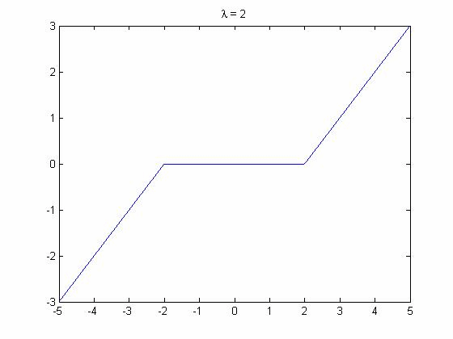

| DiscreteWavelets Toolbox |
Wavelet shrinkage function for denoising
y = ShrinkageFunction(t,lambda)
y = ShrinkageFunction(t,lambda) creates the piecewise linear function used to perform wavelet shrinkage.
The value lambda must be a positive number.
ShrinkageFunction is piecewise linear with the following pieces:
| t+lambda, | if t < -lambda |
| 0, | -lambda < x < lambda. |
| t-lambda, | if t > lambda |
ShrinkageFunction(t,lambda) converts t to zero if |t|
Apply shrinkage to a vector. The commands
v=[ -3 2.1 1.8 -4 5 1 .5 -.1] %Create a vector y=ShrinkageFunction(v,2) %Apply the shrinkage function with lambda=2
produces
v = -3.0000 2.1000 1.8000 -4.0000 5.0000 1.0000 0.5000 -0.1000 y = -1.0000 0.1000 0 -2.0000 3.0000 0 0 0
Plot the shrinkage function.
t=-5:.001:5; %Create some evaluation points
plot(t,ShrinkageFunction(t,2)); %Plot the shrinkage function
title('\lambda = 2');

DonohoSure, SureShrink, UniversalThreshold, WaveletShrinkage
© 2007-2008 Patrick Van Fleet